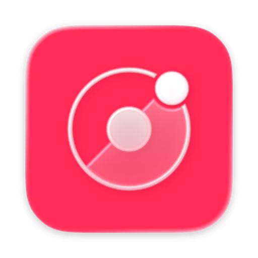

Crisp
A macOS screen recorder built for quality. Record at full fidelity, then export with smooth animated zooms to wherever you clicked.
Requires macOS 14 Sonoma or later on Apple silicon. Free and open source.
Install
-
Unzip and move to Applications
Double-click the downloaded zip, then drag
Crisp.appinto your Applications folder. -
Open it the first time
Crisp is signed but not notarized by Apple, so macOS will pause the first launch. Right-click
Crisp.appand choose Open. If macOS only offers to move it to the Trash, open it once, then go to System Settings → Privacy & Security, scroll down, and click Open Anyway.Prefer the Terminal?
Clear the quarantine flag and Crisp opens like any other app:
xattr -dr com.apple.quarantine /Applications/Crisp.app -
Allow screen recording
Grant Screen Recording when asked, then relaunch Crisp. That's the only permission it needs. Nothing else is monitored or sent anywhere.
What you get
- A maximum-fidelity master. 10-bit HEVC or ProRes at native Retina resolution and 60 fps, so gradients don't band.
- Automatic zooms. Every click is logged while you record, and the export smoothly zooms to the action.
- A simple editor. Adjust zoom levels and timing, trim, mark clips, and speed up the slow parts.
- An AI editorial pass. Hand the recording to Claude Code or Codex and compare before and after.
- Banding-free screenshots. 16-bit PNG or 10-bit HEIC captures in Display P3.